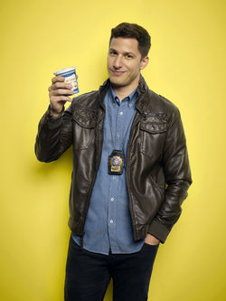
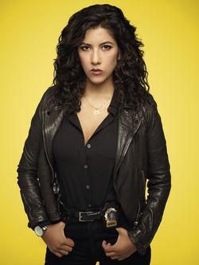
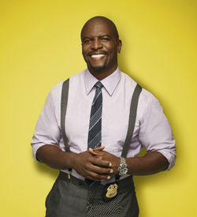
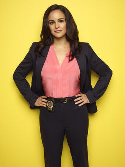
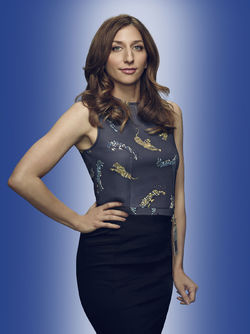
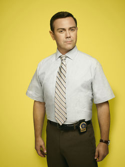
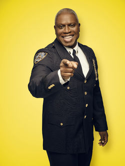
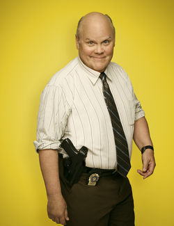
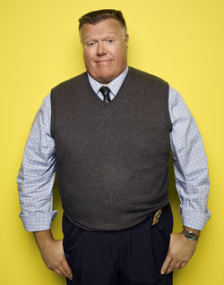

// Characters
Main characters
-

Jake Peralta
Andy Samberg
Detective Jacob "Jake" Peralta is a good enough NYPD cop that he's never had to work that hard or follow the rules too closely. Perhaps because he has the best arrest record among his colleagues, he's been enabled - if not indulged - throughout his entire career.
-

Rosa Diaz
Stephanie Beatriz
Detective "Rosa Diaz" is considered "the tough guy" and the "badass" in the precinct. Rosa is scary, smart, secretive, and difficult to read.
-

Terry Jeffords
Terry Crews
Sergeant Terrance Vincent "Terry" Jeffords is a linebacker of a man who's lost his nerve, not because he's a wimp, but because a year prior to the series, his wife had twin baby girls—Cagney and Lacey—and he can't imagine not seeing them grow up.
-

Amy Santiago
Melissa Fumero
Detective Amy Santiago is a detective at the 99th precinct of the NYPD. Always eager to impress, Amy is looking for a mentor to help her achieve her dream of being promoted to captain.
-

Gina Linetti
Chelsea Peretti
Regina "Gina" Linetti is the 99th Precinct's sardonic civilian administrator. At the end of season two, she leaves The 99th Precinct to join Captain Ray Holt, working at the NYPD's public relations office. She returns to her old post at the end of The Oolong Slayer.
-

Charles Boyle
Joe Lo Truglio
Detective Charles Boyle is the precinct's workhorse. He is shown as not that brilliant, not physically gifted, although he tries harder than anyone else.
-

Raymond Holt
Andre Braugher
Captain Raymond Jacob "Ray" Holt is the Captain of The 99th Precinct. He is strict and sticks to the cop rules of its handbook.
-

Michael Hitchcock
Dirk Blocker
Detective Michael Hitchcock is an older male detective at Precinct 99. His partner is Scully who is equally lazy.
-

Norm Scully
Joel McKinnon Miller
Detective Norm Scully is an older male detective at Precinct 99. His partner is Hitchcock who is equally lazy.